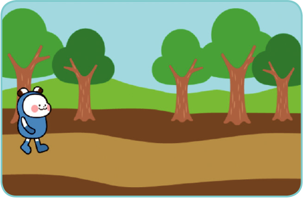
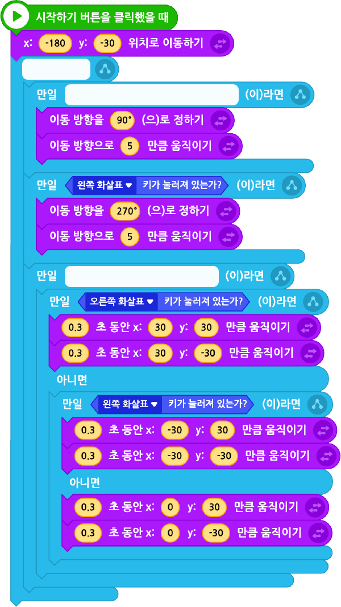

엔트리봇이 달리고 점프하는 프로그램을 작성해 보자.
(1)왼쪽, 오른쪽 화살표 키를 누르면 화살표 키 방향으로 이동한다.
(2)(3)~(5)를 반복한다.
(3)스페이스키와 오른쪽 화살표 키를 같이 누르면 점프하면서 오른쪽으로 이동한다.
(4)스페이스키와 왼쪽 화살표 키를 같이 누르면 점프하면서 왼쪽으로 이동한다.
(5)스페이스키를 누르면 제자리에서 점프한다.
실행 화면

- 오브젝트
-
엔트리봇
오솔길
아래 블록을 참고하여 프로그램을 작성해 보자.
엔트리봇

이전
다음